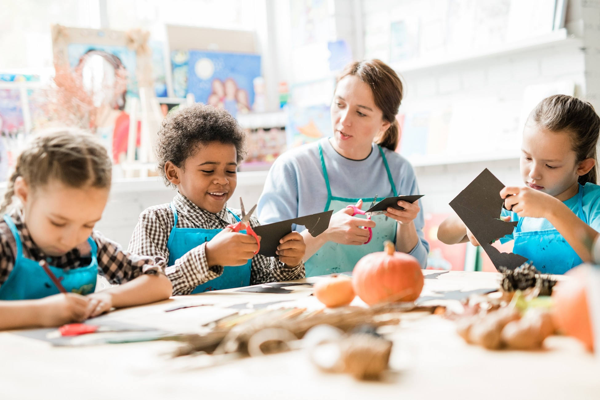
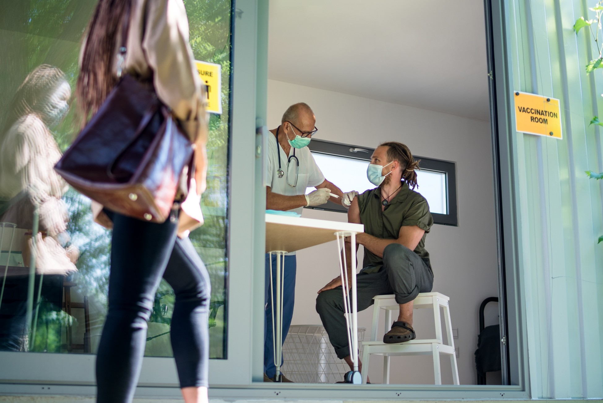
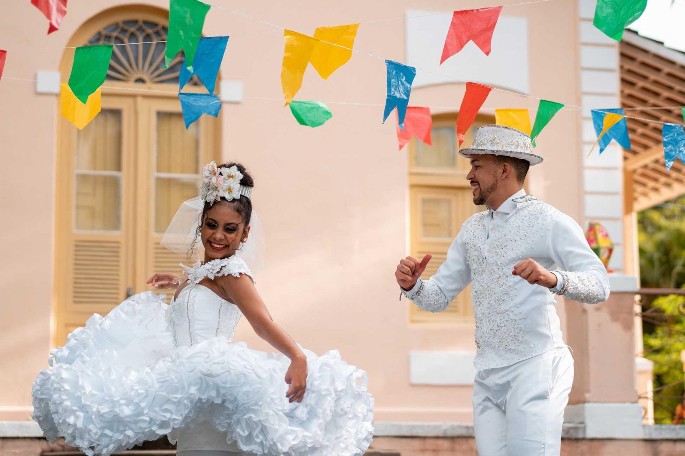

Descubra como nossas iniciativas têm impactado comunidades por meio de ações em educação, saúde e cultura. Ao longo dos últimos anos, realizamos projetos que promoveram conhecimento, bem-estar e valorização cultural. Cada entrega reflete nosso compromisso com a transformação social e o fortalecimento de oportunidades.
Nossos projetos integram Educação, Saúde e Cultura para promover desenvolvimento social de forma completa e acessível. Atuamos oferecendo oportunidades de aprendizado, ações de bem-estar e atividades culturais que fortalecem vínculos, ampliam horizontes e transformam realidades. Acreditamos que o impacto verdadeiro acontece quando o conhecimento, o cuidado e a expressão cultural caminham juntos, gerando inclusão e novas possibilidades para toda a comunidade.
Nosso objetivo é promover o desenvolvimento humano e social por meio de ações que ampliem oportunidades e fortaleçam comunidades.
Projetos voltados para ampliar o acesso ao conhecimento, incentivar a leitura, fortalecer habilidades essenciais e oferecer apoio pedagógico para crianças, jovens e adultos.
Iniciativas que promovem bem-estar físico e emocional por meio de ações educativas, atividades preventivas, orientação sobre autocuidado e incentivo a hábitos saudáveis.
Atividades que valorizam a expressão artística e o patrimônio cultural, oferecendo oficinas, eventos e experiências que aproximam a comunidade da arte e da identidade local.
Seja voluntário e faça parte dessa transformação!
📍 Endereço: Rua das Flores, 128 – Bairro Novo Horizonte, Curitiba/PR
📞 Telefone: (41) 99845-2231
✉️ E-mail: contato@ongvidanova.org
📅 Horário de Atendimento: Segunda a Sexta, 9h às 18h